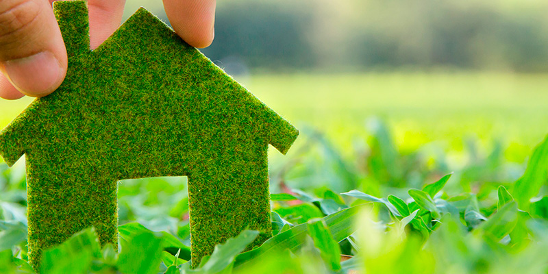

Nos permiten vivir de manera más independiente al producir nuestra propia energía, agua y alimentos de forma sostenible.
Reducen significativamente los gastos del hogar en electricidad, gas y agua, mejorando la economía familiar.
Contribuyen a la salud de las personas al disminuir la contaminación del aire dentro y fuera del hogar.
Ayudan a conservar los ecosistemas locales al reducir la extracción de recursos naturales como leña y agua subterránea.
Fomentan una cultura de responsabilidad ambiental en las comunidades, educando a las nuevas generaciones sobre el cuidado del planeta.
← RegresarInstituciones que cuidan el agua: CONAGUA - Comisión Nacional del Agua
Correo: zoeherrera804@gmail.com | Dirección: Escuela Preparatoria Anexa a la Normal no.1 de Toluca | Teléfono: 55 1784 9913